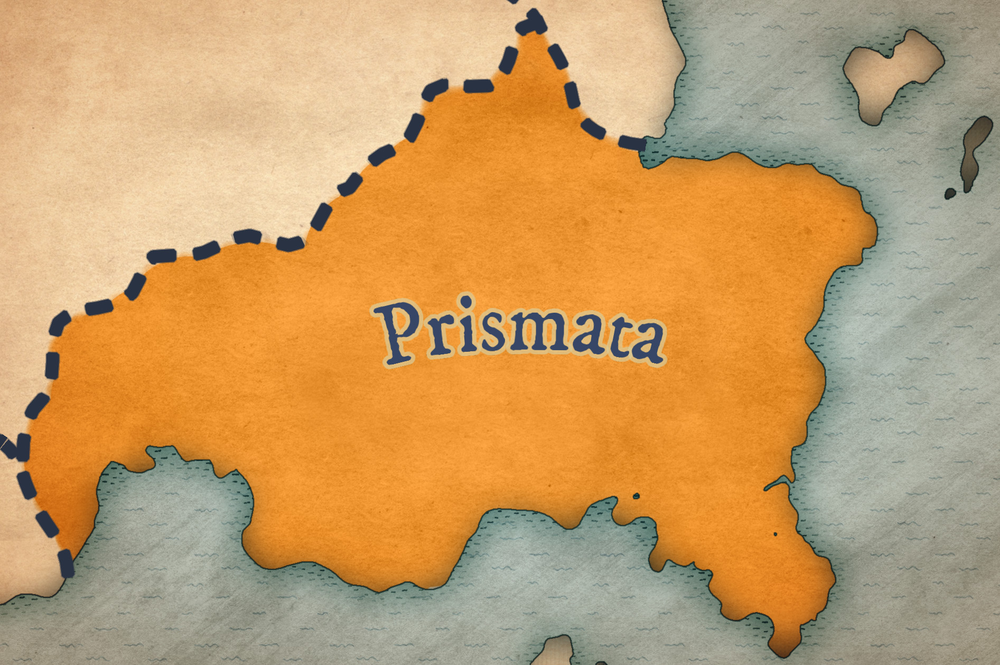
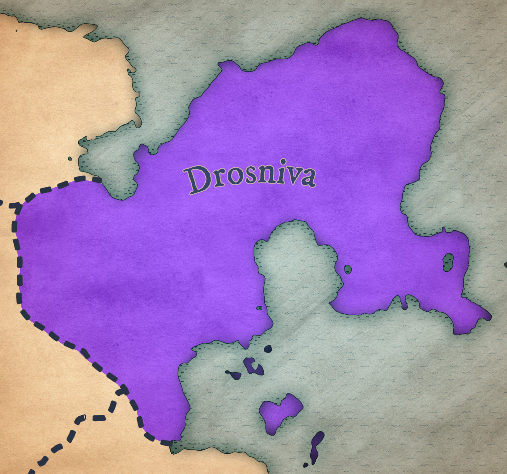
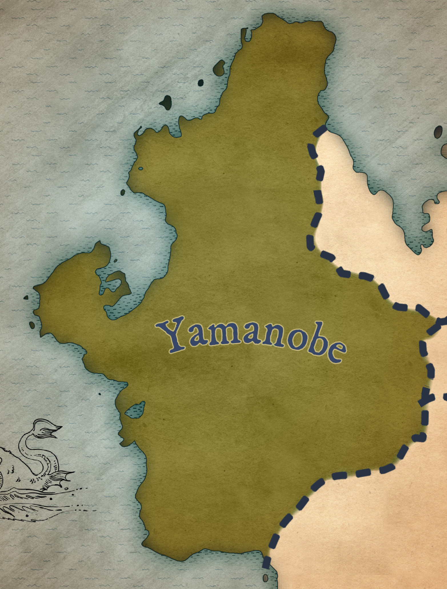
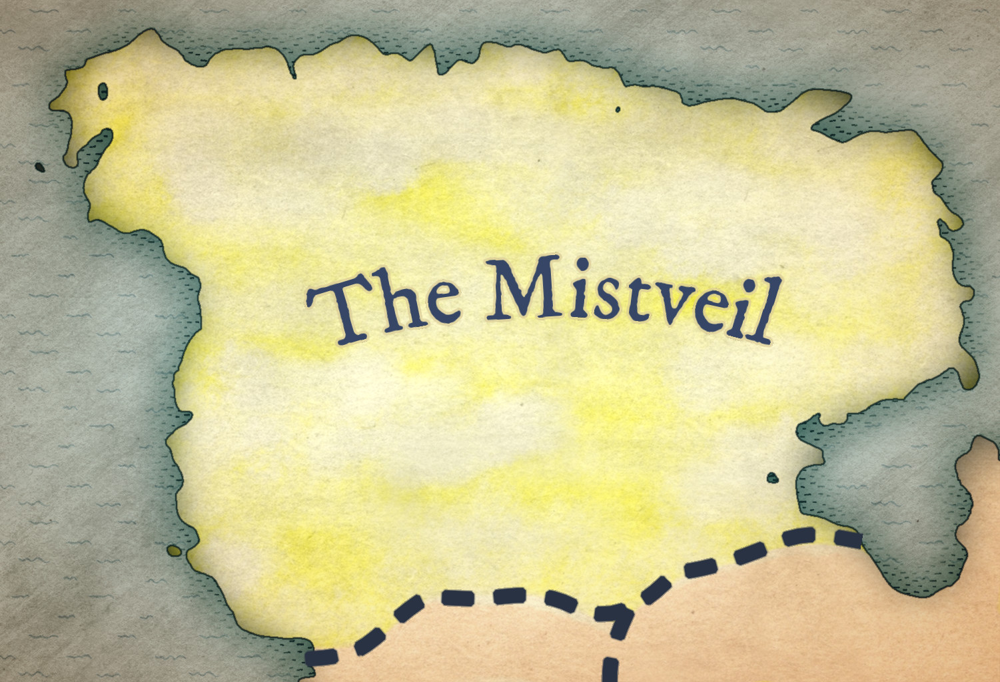
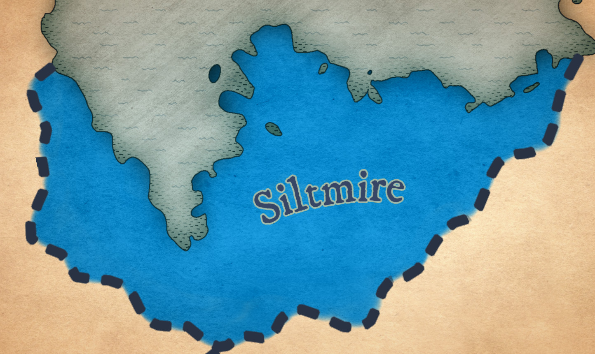
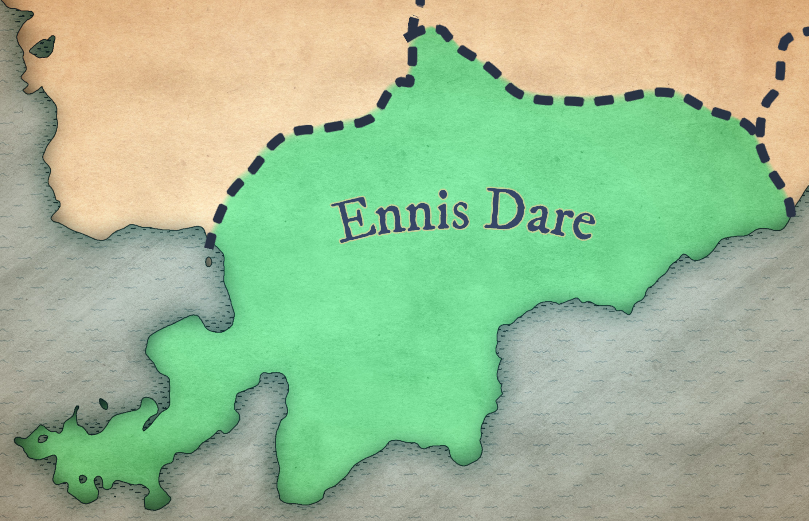
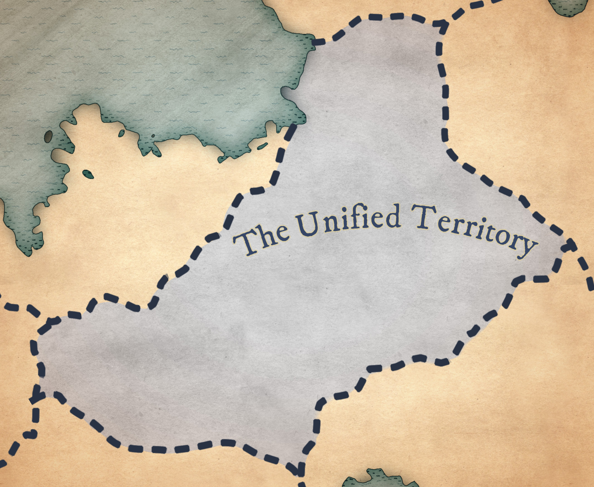

Prismata

The land of scorching sands, Prismata is a desert province home to the Scalekin, a tall, reptilian race that thrives in the heat. Attuned to the element of fire, the province is home to many ancient libraries, which the Scalekin consider sacred monuments to be preserved at all costs. Precious gems are Prismata's main export, and the province is known for its beautiful jewelry.
Drosniva

The icy province of Drosniva is home to the Fey, a harsh and militaristic race that keeps largely to themselves. Drosniva is attuned to the element of darkness, lending greatly to the Fey's mysterious and often sinister reputation. The province is known for its unforgiving terrain and punishing winters, but the Fey have adapted to the cold and are able to thrive in the harsh conditions. Drosniva is known for its fine furs and pelts, which are highly sought after by traders from other provinces. That being said, the Fey are not known for their hospitality, and outsiders are rarely welcome in Drosniva.
Yamanobe

A province of lush forests and the towering peaks of the Hands of Ostea, Yamanobe is the home of the Dwarrow. The Dwarrow are a short and stocky people, built like the stone they revere. The province is attuned to the element of earth, and the Dwarrow are known not only for their expert architecture and craftsmanship, but also for their deep connection to the land. Yamanobe is known for its rich soil and bountiful harvests, and the province is a major supplier of food to the other provinces. The Dwarrow are a gentle and welcoming people, and Yamanobe is a popular destination for travelers seeking respite from the hustle and bustle of the other provinces.
The Mistveil

Not much is known about the Mistveil, due to the thick enchanted fog that shrouds the province. The Mistveil is the original home of the Gnomes, a slight race vaunted for their prowess in magical research and engineering. The province is attuned to the element of light, and the Gnomes are known for their intricate glasswork. Rare products containing enchantments invisible to the naked eye are highly sought after by any craftsman with half a brain. Although a small portion of the Gnome population now resides in the Unified Territory, their knack for invention and innovation is still highly sought after by the other provinces. The Mistveil is a place of mystery and wonder, and many travelers have tried (and failed) to lift its age-old enchantment.
Siltmire

Siltmire is a province of Goblins, a shamanic and tribal race focused on worship of the Aspect of the Tides, Nerithis. The province is attuned to the element of water, and the Goblins are known for their expert scrimshaw, fishing, and healing poultices. Siltmire is a place of great natural beauty, with its lush marshes and winding rivers. The province exports fish and seafood to the other provinces, and the Goblins are known for taming amphibians in their own form of monster husbandry. Siltmire is a place of great spiritual significance to the Goblins, and the province is home to many ancient shrines and temples dedicated to Nerithis.
Ennis Dare

A province of rolling hills and verdant meadows, Ennis Dare is the home of the Hillfolk, a race of rabbits, mice, and other small creatures. The province is attuned to the element of air, and the Hillfolk are known for their expert tailoring and weaving. Ennis Dare is a place of great natural beauty, with its fields of wildflowers and gentle streams. The province is a major supplier of textiles to the other provinces, and the Hillfolk are known for their hospitality and generosity. Ennis Dare is a popular destination for travelers seeking peace and tranquility, and the province is home to many inns and taverns that cater to visitors from all over the realm. Hillfolk are often sought out as diplomats and mediators due to their reputation for fairness and impartiality.
The Unified Territory

The Unified Territory is the central province on the continent of Erde, and is home to a diverse population of all races. The province is the center of trade for the realm, and is known for its bustling markets and thriving economy. The Unified Territory is rife with ambient mana, but is not attuned to any particular element. The province is a melting pot of cultures and traditions, and is home to many guilds and organizations that cater to the needs of the other provinces. The Unified Territory is a place of great opportunity and adventure, and is a popular destination for travelers seeking to make their fortune in the realm. The province is governed by a council of representatives from each of the other provinces, and is known for its fair and just rule. The Unified Territory hosts the Adventurers Guild as well as the Unified Mage Academy, where students from across the realm are taught the nature of their elemental powers, and how to use them to protect the people from the threat of the Undead.